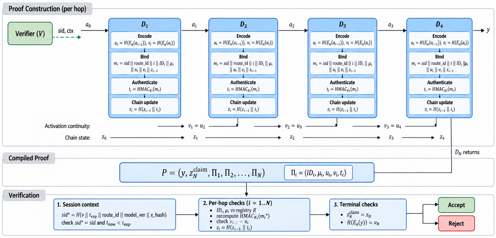
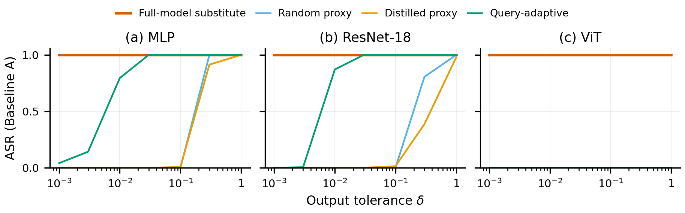
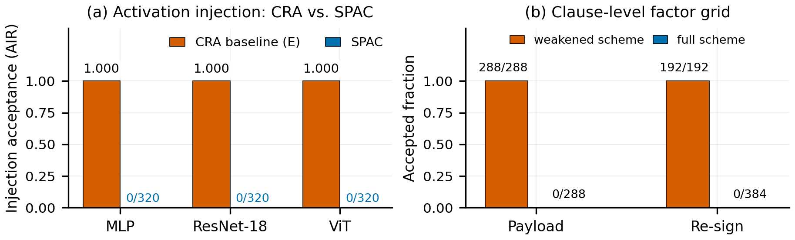
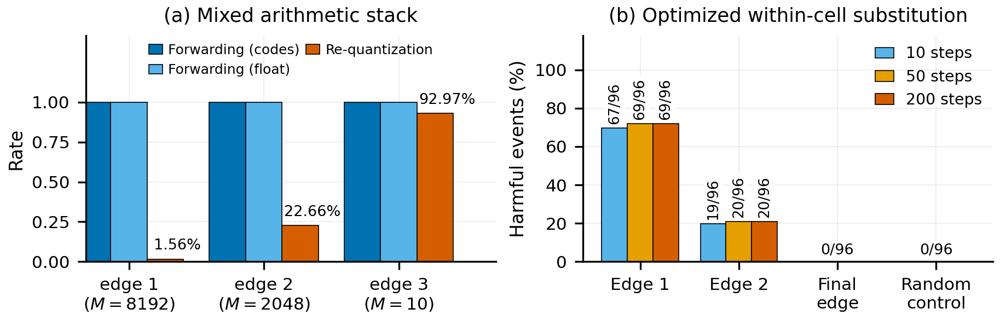

SPAC：面向分布式神经推理的会话绑定路径认证
摘要
分布式神经网络推理在彼此独立管理的设备上依次执行有序的模型分片，因此需要对会话参与和激活传递进行认证。我们提出 SPAC（Session-bound Path Authentication Chain，会话绑定路径认证链），将设备身份、有序逐跳记录、已注册的分片声明以及跨跳编码激活连续性绑定到同一份证明中。在至多 k 台（k < N）设备可能被腐化的博弈模型下，通过归约到消息认证码（MAC）不可伪造性，可以界定诚实设备参与被全新误归因的上界。在声明绑定层级，SPAC 认证已注册的声明与编码传递，但不提供设备侧硬件证明，也不证明每一步推理的正确性；硬件背书的度量需要额外证据。在所测试的代理攻击、拓扑攻击与摘要不一致注入负载中，均未观察到被接受的伪造。SPAC 在所评估的多层感知机（MLP）与 ResNet 配置下仅增加 0.65–2.56 毫秒开销，证明元数据随链长线性增长。编码研究揭示了浮点转发下单元内替换攻击的可行性；对传输的整数编码进行认证即可在该类链路上消除这一替换机制——相应的 ResNet 实验中精度差异仅为 0.01 个百分点。这些结果将“已认证的路径记录与编码传递一致性”与“被腐化计算的语义正确性”明确区分开来。
实验结果一览

SPAC 总览。每一跳对自身身份、已注册声明、激活摘要与前驱状态进行认证；验证方检查这些记录、相邻摘要连续性以及末端输出绑定。

代理攻击。四种代理攻击的 ASR–δ 曲线（N = 5，五个随机种子）。完整模型替代者在任意容忍度、任意架构下 ASR = 1；较弱的代理（随机、蒸馏、查询自适应）只有随 δ 放宽才逐渐被接受。SPAC 在所有 δ 下全部拒绝（252 个测量单元中 FAR = 0）。

连续性绑定与较弱验证的对比。(a) CRA 风格基线与 SPAC 的激活注入接受情况，覆盖每种架构的全部配置（4 组 MLP、9 组 ResNet-18、9 组 ViT，各 n = 320）：SPAC 在每个单元中接受事件数为零，单侧 95% 上界为每单元 0.93%。(b) 5,184 份提交的子句级因子网格：去掉连续性子句后所有篡改载荷均通过；保留则全部拒绝。

异构算术与对抗替换下的激活编码器（切分 ResNet-18）。(a) 混合技术栈（CUDA fp32 → CPU fp32 → CPU fp16）：协议转发接受 300/300 个合法输入。(b) 优化的单元内替换：前两条边上按梯度预算的有害事件；最终边与全部对照均为 0/96。
BibTeX
@misc{xiang2026spac,
title = {SPAC: Session-Bound Path Authentication for Distributed Neural Inference},
author = {Xiang, Zhengzhe and Chen, Yinlin and Cheng, Guanjie and Taheri, Javid and Deng, Shuiguang},
year = {2026},
howpublished = {Manuscript submitted to IEEE Transactions on Dependable and Secure Computing},
url = {https://nullion2021.github.io/SPAC/}
}